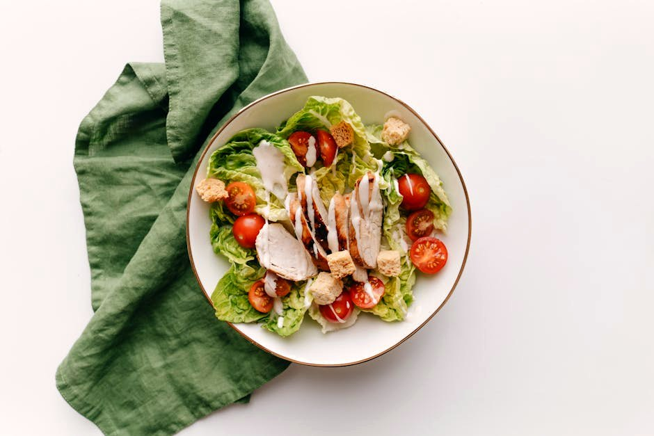

Buffalo Chicken Lettuce Cups

Buffalo Chicken Lettuce Cups delivers 70 g of protein for just 6 g net carbs — a quick lunch that comes together fast. A filling, macro-balanced lunch that won't spike your blood sugar.
Ingredients
- 230 g Chicken breast
- 2 tbsp Hot sauce (Frank's-style)
- 30 g Blue cheese or Greek yogurt dip
- 100 g Little gem lettuce
- 80 g Celery & carrot sticks
- 1 tsp Butter
Equipment
- non-stick skillet
Method
- Cook the diced chicken in a hot pan until done, 8-10 min.
- Melt the butter with the hot sauce and toss the chicken to coat.
- Spoon into lettuce cups; drizzle with the blue cheese or yogurt dip and serve with crudités.
Storage & make-ahead
Fridge: keeps 3–4 days in an airtight container — reheat gently. Most portions freeze well for up to 2 months; thaw overnight.
Tip
Game-day flavour at 70 g protein. Use Greek-yogurt dip to keep it leaner.
Dietary swaps
Dairy-free: Blue cheese or Greek yogurt dip → unsweetened coconut or soy yogurt; Butter → olive oil or vegan butter (for lactose intolerance or a dairy-free diet)
Full nutrition (estimated, per serving): 500 kcal · 70 g protein · 6 g net carbs · 22 g fat (5 g sat) · 2 g fiber · 6 g sugar · 230 mg sodium. Allergens: Milk. Macros are realistic estimates from standard food-composition values; brands and portions vary.
Get the full cookbook (PDF) — 100 recipes, 3 meal plans & the science →